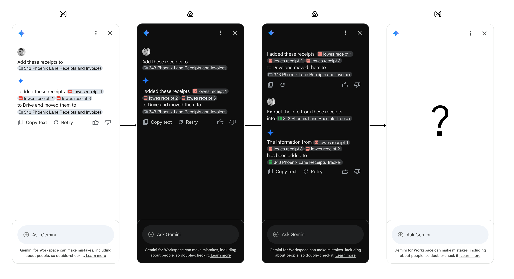
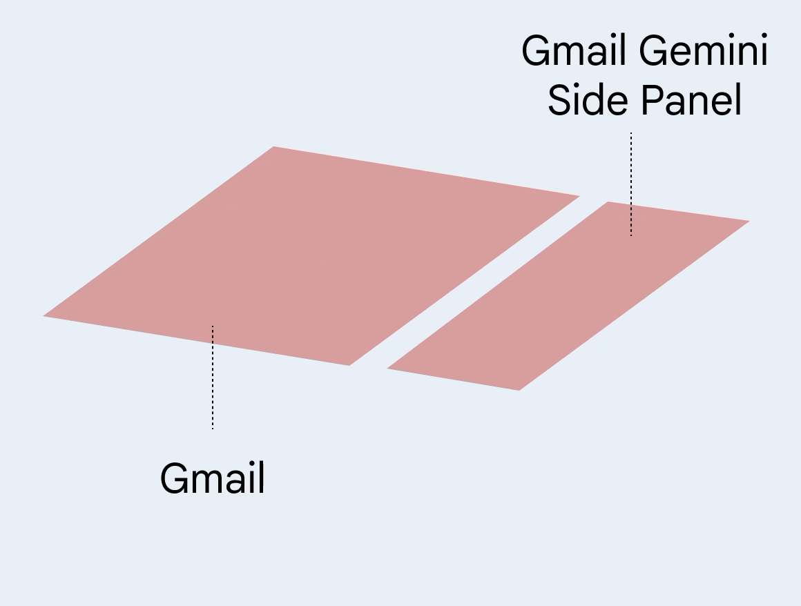
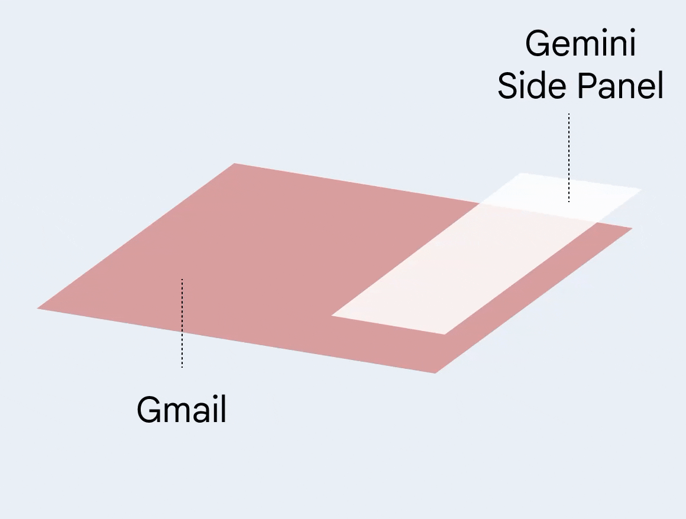
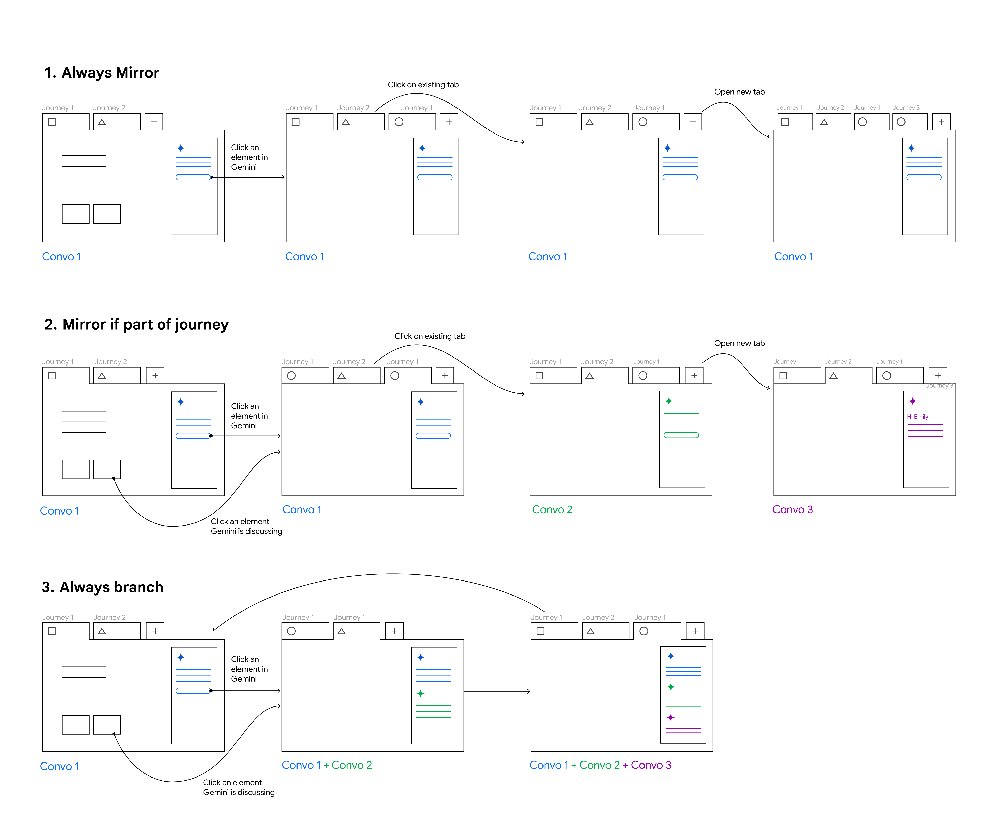
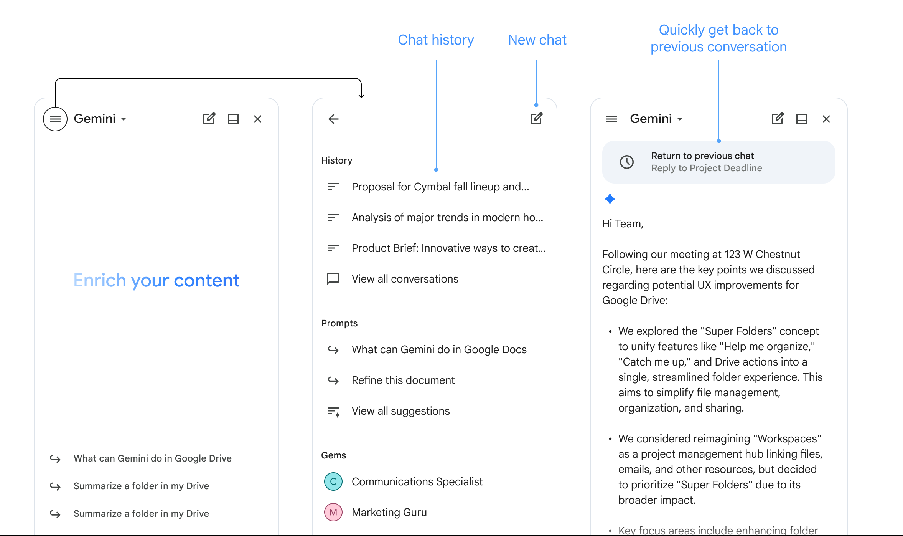
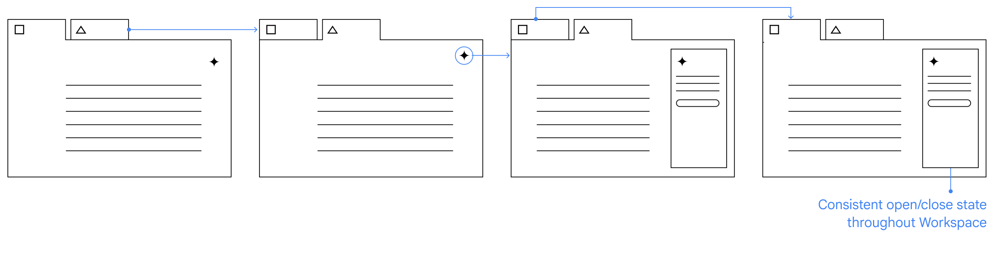

Context
In 2025, Google Workspace set out to lead in AI-powered productivity by introducing an assistive AI side panel across products. The goal was to enable users to seamlessly find, analyze, and act on content using Gemini—no matter where work happens.
As Gemini rolled out across Workspace, a critical issue emerged:
The same AI behaved differently across products and surfaces—creating confusion and breaking user trust.
Users expected a consistent, continuous AI experience, but instead encountered fragmented interactions depending on where they were (Drive, Gmail, Docs, etc.).
We needed to define how conversations should behave across:
Surfaces within Drive
File list → Overlay viewer → Standalone tab
Cross-product journeys
e.g. Gmail → Drive → Docs → Sheets
Two key questions emerged:
- What should happen to a conversation when users move between surfaces or products?
- When users return to a previous app, should the conversation continue, reset, or branch?

Users want conversations to persist across Workspace to support seamless, cross-product workflows—but expectations around returning to previous contexts were unclear.
Before

After

Exploration
I defined three models to evaluate:
1. Always Mirror
A single conversation persists and mirrors across all apps and surfaces—following the user like an assistant.
2. Mirror When Contextually Relevant
Conversations persist and mirror only when they are part of a clear user journey, such as interacting with a file or entity tied to the task.
- Opening a new tab without context → Zero state
- Returning to an existing tab → Previous conversation is preserved
- Contextual actions (e.g. clicking a file, chip, or entity) → Continue the same conversation
3. Always Branch
Each new surface or app creates a new branch of the conversation, even if related.

Evaluation
We tested these models through two cross-product workflows:
- Track receipts: Gmail → Drive → Sheets → Gmail
- Analyze a sales meeting: Gmail → Drive → Docs → Gmail
Password: 123
Always Mirror won—decisively.
We established a clear product direction:
Conversations should persist and mirror across all Workspace products and surfaces, enabling a seamless, assistant-like experience.
1. Strong Mental Model: Gemini as an Assistant
Users consistently viewed Gemini as a persistent assistant, not a tool tied to a single surface.
2. Preference for Continuity
Participants overwhelmingly preferred a single, continuous conversation that follows them across apps.
3. "Unexpected Delight" Effect
Even users who initially assumed they would prefer separation changed their minds after experiencing continuity.
Design Considerations
The side panel should:
- Clearly start a new conversation at any time
- Seamlessly access conversation history across apps

Maintain consistent open-state behavior across surfaces

Persistent Gemini conversations across Workspace products
Outcome & Next Steps
Drive introduced persistent conversations within the file viewer, enabling continuity when users cycle through files. This established the foundation for a more assistant-like experience within a single product surface.
To extend this model across Workspace, we identified a key dependency:
Cross-product conversation history
Supporting shared conversation history across products (e.g. Gmail, Drive, Docs, Sheets) has now been prioritized as a direct result of this work.
Once this foundation is in place, we will:
- Introduce persistent conversations across Workspace
- Enable seamless, cross-product workflows with a single continuous conversation
- Fully realize Gemini as a system-level assistant that follows users across their work